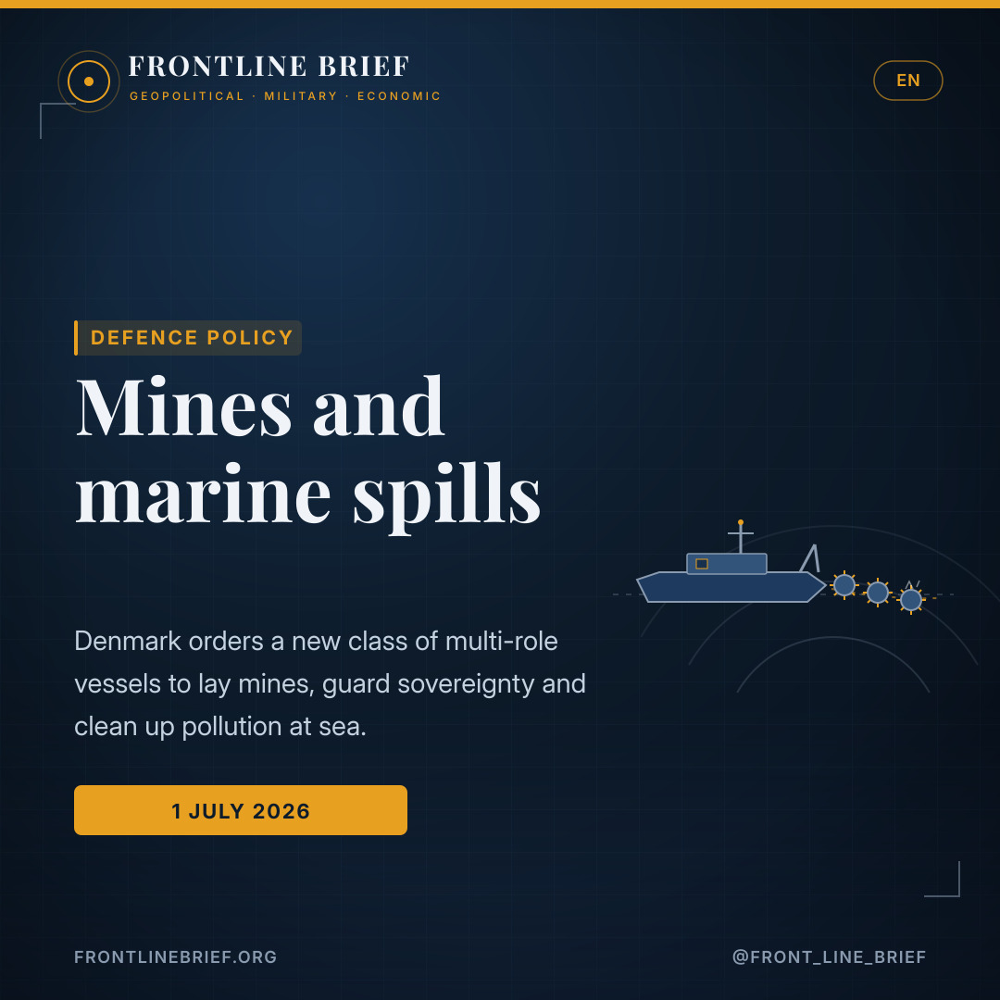
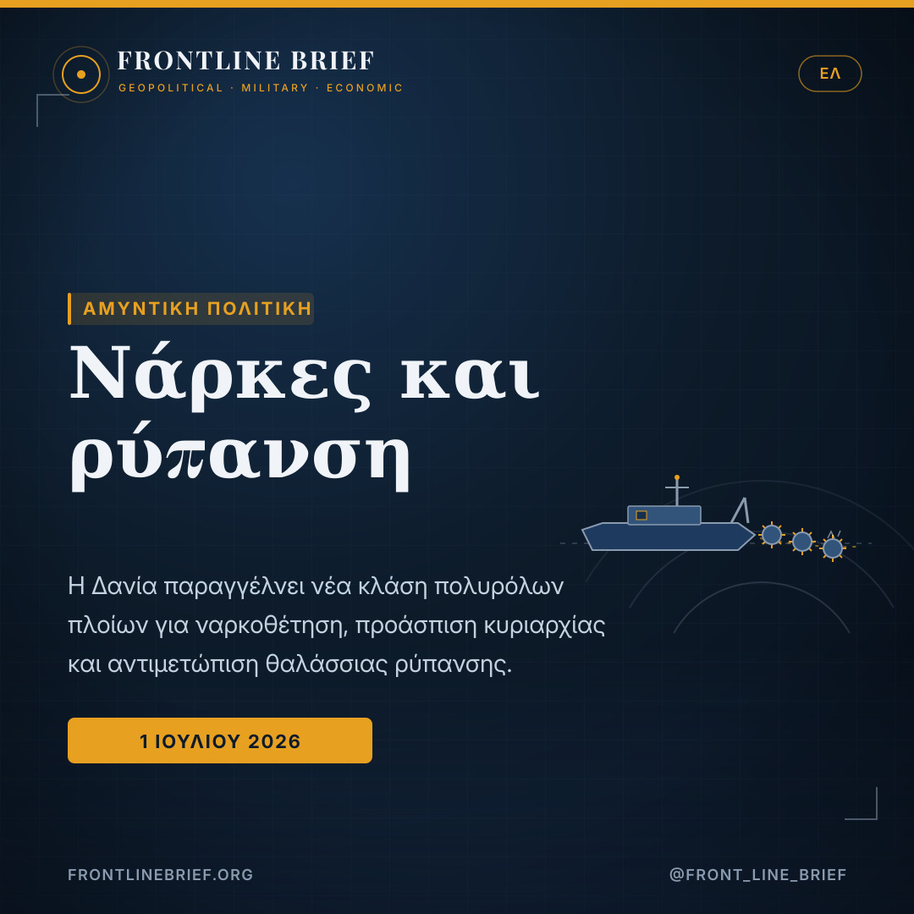
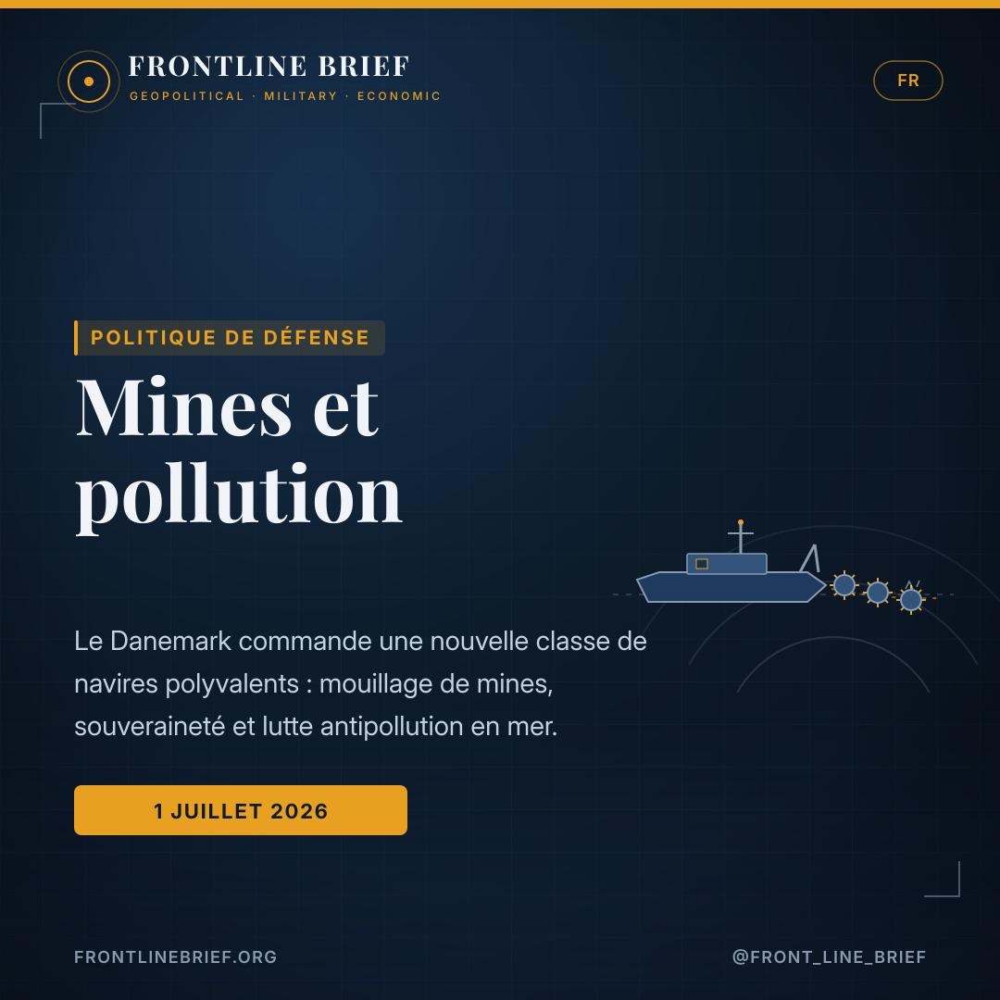
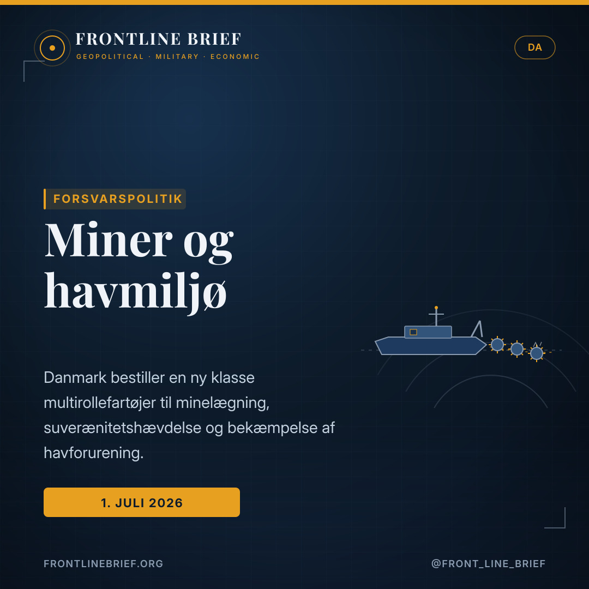
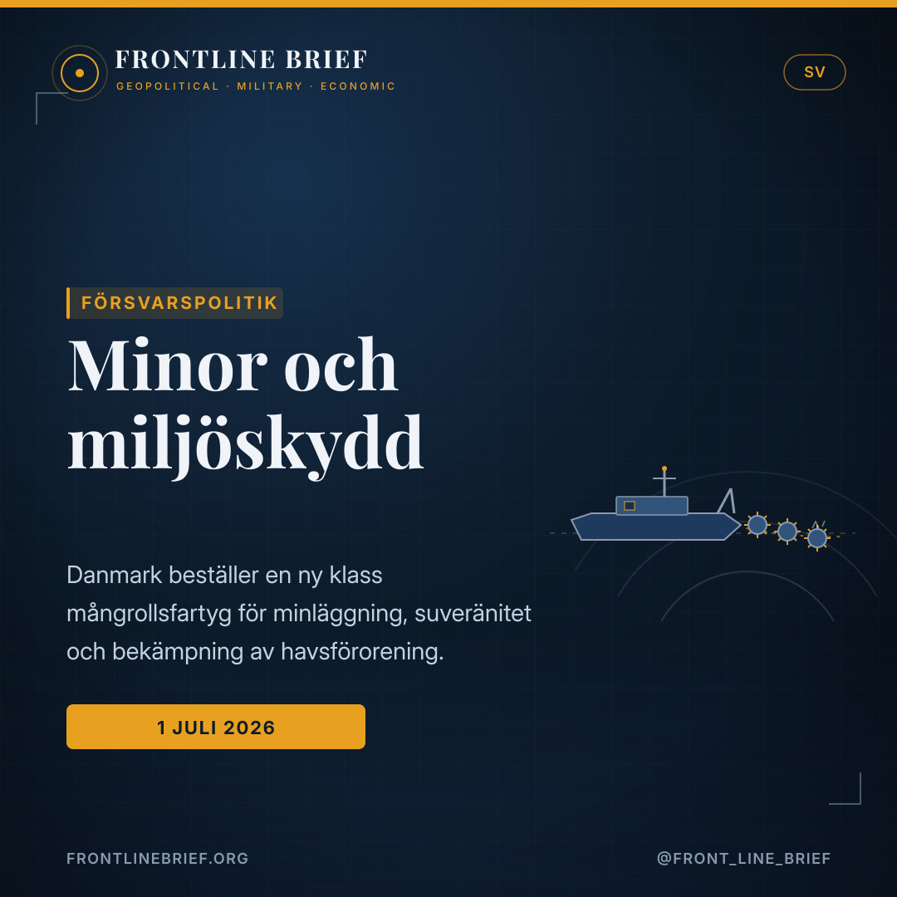

Mines and marine spills: Denmark orders a new class of multi-role naval vessels
The Royal Danish Navy is to get a new class of multi-role ships that can lay minefields, clean up pollution and help enforce sovereignty in Danish waters. Built by a Danish consortium with steel already being cut in Poland, the vessels fold three very different jobs into one hull — and land as the Baltic quietly rediscovers the value of naval mine warfare.





Danish-built
The Danish Defence Acquisition and Logistics Organisation signed the deal on 4 February and announced it on 1 July. The ships will be delivered by the consortium Orlogsskibe Danmark K/S — OSK Design, Karstensens Skibsværft and Hvide Sande Shipyard.
Three jobs, one hull
Each vessel is designed for marine-environmental response to pollution and oil spills, for minelaying, and for supporting maritime surveillance and the assertion of Danish sovereignty at sea.
Steel already cut
Steel cutting for the first hull began on 10 June at Karstensens' yard in Gdańsk, Poland; after about a year the hull will be towed to Hvide Sande for outfitting, with operational introduction planned from around the turn of 2029.
A quiet but telling order
It is not the kind of contract that makes headlines, but it says something about where European navies are heading. The Danish Defence Acquisition and Logistics Organisation (DALO) has confirmed an order for a new class of multi-role vessels for the Royal Danish Navy. The agreement was actually signed on 4 February and announced only now, on 1 July, once the final contractual details were settled — part of a political sub-agreement on the fleet plan under Denmark's current defence settlement.
Three jobs, one hull
What makes the ships notable is their breadth. Each is designed to respond to marine pollution and oil spills, to lay mines, and to support maritime surveillance and the assertion of sovereignty in Danish waters. DALO's head of navy programmes, Flotilla Admiral Claus Lundholm Andersen, framed the environmental role first, saying the navy would gain "modern capabilities for marine environmental response" able to meet the conventions Denmark has signed. But folding minelaying into the same platform is the quieter signal.
One hull, three jobs: clean up a spill, lay a minefield, or assert sovereignty in Danish waters.
A Danish-built ship
The vessels will be delivered by Orlogsskibe Danmark K/S, a consortium of three Danish companies — OSK Design, Karstensens Skibsværft and Hvide Sande Shipyard. The industrial choreography is already under way: steel cutting for the first hull began on 10 June at Karstensens' facility in Gdańsk, Poland. After roughly a year of hull construction there, the ship will be towed to Hvide Sande on Denmark's west coast for outfitting, with the next hull following behind.
An unusual chain of command
The arrangement behind the ships is as distinctive as the ships themselves. They are being procured by DALO and will be crewed by the Royal Danish Navy — but they will be deployed on marine-environment missions by Denmark's Ministry for Societal Security and Emergency Management, which holds the national remit for the marine environment. It is a neat illustration of how modern navies increasingly straddle the line between defence and civil protection.
Why it matters
The timing is the point. Minelaying is a capability many Western navies let wither after the Cold War, and it is now being quietly rebuilt as the Baltic becomes one of Europe's tenser maritime spaces — a theatre of undersea-infrastructure scares, shadow-fleet tankers and heightened Russian activity. A ship that can seed a defensive minefield, watch a waterway and clean up after an incident is a versatile answer to exactly that environment. For a Nordic shipbuilding base, it is also work kept at home; for Denmark's neighbours, one more sign that the Baltic's navies are rearming for a harder decade.
Μια διακριτική αλλά ενδεικτική παραγγελία
Δεν είναι το είδος της σύμβασης που κάνει πρωτοσέλιδα, όμως λέει κάτι για την κατεύθυνση των ευρωπαϊκών ναυτικών. Ο δανικός Οργανισμός Αμυντικών Προμηθειών και Εφοδιαστικής (DALO) επιβεβαίωσε παραγγελία νέας κλάσης πολυρόλων πλοίων για το Βασιλικό Ναυτικό της Δανίας. Η συμφωνία υπογράφηκε στην πραγματικότητα στις 4 Φεβρουαρίου και ανακοινώθηκε μόλις τώρα, την 1η Ιουλίου, αφού τακτοποιήθηκαν οι τελευταίες συμβατικές λεπτομέρειες — μέρος μιας πολιτικής υπο-συμφωνίας για το σχέδιο στόλου στο πλαίσιο της τρέχουσας αμυντικής συμφωνίας της Δανίας.
Τρεις ρόλοι, ένα σκαρί
Αυτό που κάνει τα πλοία αξιοσημείωτα είναι το εύρος τους. Το καθένα σχεδιάζεται για αντιμετώπιση θαλάσσιας ρύπανσης και πετρελαιοκηλίδων, για ναρκοθέτηση, και για υποστήριξη της θαλάσσιας επιτήρησης και της άσκησης κυριαρχίας στα δανικά ύδατα. Ο επικεφαλής των ναυτικών προγραμμάτων του DALO, υποναύαρχος Κλάους Λούντχολμ Άντερσεν, πρόταξε τον περιβαλλοντικό ρόλο, λέγοντας ότι το ναυτικό θα αποκτήσει «σύγχρονες δυνατότητες αντιμετώπισης θαλάσσιας ρύπανσης» ικανές να ανταποκρίνονται στις συμβάσεις που έχει υπογράψει η Δανία. Όμως η ενσωμάτωση της ναρκοθέτησης στην ίδια πλατφόρμα είναι το πιο διακριτικό σήμα.
Ένα σκαρί, τρεις δουλειές: καθάρισε μια πετρελαιοκηλίδα, στρώσε ένα ναρκοπέδιο, ή άσκησε κυριαρχία στα δανικά ύδατα.
Ένα πλοίο δανικής κατασκευής
Τα πλοία θα παραδοθούν από την Orlogsskibe Danmark K/S, κοινοπραξία τριών δανικών εταιρειών — OSK Design, Karstensens Skibsværft και Hvide Sande Shipyard. Η βιομηχανική χορογραφία έχει ήδη ξεκινήσει: η κοπή χάλυβα για το πρώτο σκαρί άρχισε στις 10 Ιουνίου στις εγκαταστάσεις της Karstensens στο Γκντανσκ της Πολωνίας. Έπειτα από περίπου έναν χρόνο κατασκευής του σκαριού εκεί, το πλοίο θα ρυμουλκηθεί στο Hvide Sande στη δυτική ακτή της Δανίας για τον εξοπλισμό του, με το επόμενο σκαρί να ακολουθεί.
Μια ασυνήθιστη αλυσίδα διοίκησης
Η διάταξη πίσω από τα πλοία είναι εξίσου ιδιαίτερη με τα ίδια τα πλοία. Προμηθεύονται από τον DALO και θα επανδρώνονται από το Βασιλικό Ναυτικό της Δανίας — αλλά θα αναπτύσσονται σε αποστολές θαλάσσιου περιβάλλοντος από το δανικό Υπουργείο Κοινωνικής Ασφάλειας και Διαχείρισης Εκτάκτων Αναγκών, που έχει την εθνική αρμοδιότητα για το θαλάσσιο περιβάλλον. Είναι μια εύγλωττη απεικόνιση του πώς τα σύγχρονα ναυτικά ολοένα ισορροπούν στη γραμμή ανάμεσα στην άμυνα και την πολιτική προστασία.
Γιατί έχει σημασία
Η συγκυρία είναι το ζητούμενο. Η ναρκοθέτηση είναι δυνατότητα που πολλά δυτικά ναυτικά άφησαν να ατροφήσει μετά τον Ψυχρό Πόλεμο, και τώρα ανοικοδομείται διακριτικά καθώς η Βαλτική γίνεται ένας από τους πιο τεταμένους θαλάσσιους χώρους της Ευρώπης — ένα θέατρο με ανησυχίες για υποθαλάσσιες υποδομές, δεξαμενόπλοια «σκιώδους στόλου» και αυξημένη ρωσική δραστηριότητα. Ένα πλοίο που μπορεί να στρώσει αμυντικό ναρκοπέδιο, να επιτηρεί έναν δίαυλο και να καθαρίζει μετά από ένα συμβάν είναι μια ευέλικτη απάντηση ακριβώς σε αυτό το περιβάλλον. Για τη σκανδιναβική ναυπηγική βάση, είναι επίσης δουλειά που μένει στην πατρίδα· για τους γείτονες της Δανίας, ένα ακόμη σημάδι ότι τα ναυτικά της Βαλτικής επανεξοπλίζονται για μια σκληρότερη δεκαετία.
Une commande discrète mais révélatrice
Ce n'est pas le genre de contrat qui fait les gros titres, mais il en dit long sur l'orientation des marines européennes. L'Organisation danoise d'acquisition et de logistique de défense (DALO) a confirmé une commande d'une nouvelle classe de navires polyvalents pour la Marine royale danoise. L'accord a en fait été signé le 4 février et n'a été annoncé que maintenant, le 1er juillet, une fois réglés les derniers détails contractuels — dans le cadre d'un sous-accord politique sur le plan de flotte de l'actuel règlement de défense danois.
Trois métiers, une coque
Ce qui rend ces navires remarquables, c'est leur polyvalence. Chacun est conçu pour répondre à la pollution marine et aux marées noires, pour mouiller des mines, et pour appuyer la surveillance maritime et l'affirmation de la souveraineté dans les eaux danoises. Le chef des programmes navals de la DALO, l'amiral de flottille Claus Lundholm Andersen, a mis en avant le rôle environnemental, indiquant que la marine gagnerait des « capacités modernes de lutte antipollution en mer » conformes aux conventions signées par le Danemark. Mais intégrer le mouillage de mines à la même plateforme est le signal le plus discret.
Une coque, trois métiers : nettoyer une marée noire, mouiller un champ de mines, ou affirmer la souveraineté dans les eaux danoises.
Un navire construit au Danemark
Les navires seront livrés par Orlogsskibe Danmark K/S, un consortium de trois entreprises danoises — OSK Design, Karstensens Skibsværft et Hvide Sande Shipyard. La chorégraphie industrielle est déjà lancée : la découpe de l'acier de la première coque a débuté le 10 juin dans l'usine de Karstensens à Gdańsk, en Pologne. Après environ un an de construction de la coque là-bas, le navire sera remorqué vers Hvide Sande, sur la côte ouest du Danemark, pour son armement, la coque suivante suivant derrière.
Une chaîne de commandement inhabituelle
L'organisation derrière ces navires est aussi singulière que les navires eux-mêmes. Ils sont acquis par la DALO et seront armés par la Marine royale danoise — mais déployés pour des missions d'environnement marin par le ministère danois de la Sécurité sociétale et de la Gestion des urgences, qui détient la compétence nationale sur l'environnement marin. Une illustration nette de la façon dont les marines modernes chevauchent de plus en plus la ligne entre défense et protection civile.
Pourquoi cela compte
Le moment choisi est l'essentiel. Le mouillage de mines est une capacité que beaucoup de marines occidentales ont laissée dépérir après la Guerre froide, et elle se reconstitue désormais discrètement alors que la Baltique devient l'un des espaces maritimes les plus tendus d'Europe — un théâtre d'alertes sur les infrastructures sous-marines, de pétroliers de la « flotte fantôme » et d'une activité russe accrue. Un navire capable de mouiller un champ de mines défensif, de surveiller un chenal et de nettoyer après un incident est une réponse polyvalente à cet environnement précis. Pour la base navale nordique, c'est aussi du travail conservé au pays ; pour les voisins du Danemark, un signe de plus que les marines de la Baltique se réarment pour une décennie plus dure.
En stilfærdig, men sigende ordre
Det er ikke den slags kontrakt, der skaber overskrifter, men den siger noget om, hvor de europæiske flåder er på vej hen. Forsvarsministeriets Materiel- og Indkøbsstyrelse (FMI/DALO) har bekræftet en ordre på en ny klasse multirollefartøjer til Søværnet. Aftalen blev faktisk underskrevet den 4. februar og først offentliggjort nu, den 1. juli, da de sidste kontraktlige detaljer var på plads — som led i en politisk delaftale om flådeplanen under det nuværende danske forsvarsforlig.
Tre opgaver, ét skrog
Det, der gør skibene bemærkelsesværdige, er deres bredde. Hvert er designet til at bekæmpe havforurening og olieudslip, til minelægning og til at understøtte maritim overvågning og hævdelse af suverænitet i danske farvande. FMI's chef for Søværnets programmer, flotilleadmiral Claus Lundholm Andersen, fremhævede miljørollen først og sagde, at Søværnet ville få «moderne kapaciteter til bekæmpelse af havforurening», der kan leve op til de konventioner, Danmark har tiltrådt. Men at folde minelægning ind i samme platform er det mere stilfærdige signal.
Ét skrog, tre opgaver: rens et olieudslip, læg et minefelt, eller hævd suverænitet i danske farvande.
Et dansk-bygget skib
Skibene leveres af Orlogsskibe Danmark K/S, et konsortium af tre danske virksomheder — OSK Design, Karstensens Skibsværft og Hvide Sande Shipyard. Den industrielle koreografi er allerede i gang: stålskæringen til det første skrog begyndte den 10. juni på Karstensens anlæg i Gdańsk i Polen. Efter cirka et års skrogbygning dér vil skibet blive slæbt til Hvide Sande på Danmarks vestkyst til udrustning, med det næste skrog bagefter.
En usædvanlig kommandovej
Arrangementet bag skibene er lige så særegent som skibene selv. De anskaffes af FMI og bemandes af Søværnet — men indsættes på havmiljøopgaver af Ministeriet for Samfundssikkerhed og Beredskab, der har det nationale ansvar for havmiljøet. Det er en fin illustration af, hvordan moderne flåder i stigende grad står med et ben på hver side af grænsen mellem forsvar og civilbeskyttelse.
Hvorfor det betyder noget
Tidspunktet er pointen. Minelægning er en kapacitet, mange vestlige flåder lod visne efter Den Kolde Krig, og den genopbygges nu stilfærdigt, mens Østersøen bliver et af Europas mest spændte maritime rum — et teater med skræk for undersøisk infrastruktur, skyggeflåde-tankere og øget russisk aktivitet. Et skib, der kan lægge et defensivt minefelt, overvåge en sejlrende og rydde op efter en hændelse, er et alsidigt svar på netop det miljø. For den nordiske skibsbygningsbase er det også arbejde, der holdes hjemme; for Danmarks naboer endnu et tegn på, at Østersøens flåder ruster op til et hårdere årti.
En stillsam men talande beställning
Det är inte den sortens kontrakt som skapar rubriker, men det säger något om vart de europeiska flottorna är på väg. Danmarks försvarsmateriel- och inköpsorganisation (FMI/DALO) har bekräftat en beställning av en ny klass mångrollsfartyg till den danska marinen. Avtalet undertecknades faktiskt den 4 februari och tillkännagavs först nu, den 1 juli, när de sista avtalsdetaljerna var lösta — som en del av en politisk delöverenskommelse om flottplanen inom Danmarks nuvarande försvarsuppgörelse.
Tre uppgifter, ett skrov
Det som gör fartygen anmärkningsvärda är deras bredd. Vart och ett är utformat för att bekämpa havsförorening och oljeutsläpp, för minläggning, och för att stödja marin övervakning och hävdande av suveränitet i danska vatten. FMI:s chef för marinens program, flottiljamiral Claus Lundholm Andersen, lyfte fram miljörollen först och sade att marinen skulle få «moderna förmågor för bekämpning av havsförorening» som kan uppfylla de konventioner Danmark anslutit sig till. Men att vika in minläggning i samma plattform är den mer stillsamma signalen.
Ett skrov, tre uppgifter: sanera ett oljeutsläpp, lägg ett minfält, eller hävda suveränitet i danska vatten.
Ett danskbyggt fartyg
Fartygen levereras av Orlogsskibe Danmark K/S, ett konsortium av tre danska företag — OSK Design, Karstensens Skibsværft och Hvide Sande Shipyard. Den industriella koreografin är redan i gång: stålskärningen för det första skrovet inleddes den 10 juni vid Karstensens anläggning i Gdańsk i Polen. Efter ungefär ett års skrovbygge där bogseras fartyget till Hvide Sande på Danmarks västkust för utrustning, med nästa skrov efter.
En ovanlig kommandokedja
Upplägget bakom fartygen är lika särpräglat som fartygen själva. De anskaffas av FMI och bemannas av den danska marinen — men sätts in på havsmiljöuppdrag av Danmarks ministerium för samhällssäkerhet och beredskap, som har det nationella ansvaret för havsmiljön. Det är en tydlig illustration av hur moderna flottor allt mer står grensle över gränsen mellan försvar och civilskydd.
Varför det spelar roll
Tidpunkten är poängen. Minläggning är en förmåga som många västliga flottor lät förtvina efter kalla kriget, och den byggs nu stillsamt upp igen medan Östersjön blir ett av Europas mest spända havsområden — en arena med oro för undervattensinfrastruktur, skuggflottetankfartyg och ökad rysk aktivitet. Ett fartyg som kan lägga ett defensivt minfält, bevaka en farled och sanera efter en incident är ett mångsidigt svar på just den miljön. För den nordiska varvsbasen är det också arbete som hålls hemma; för Danmarks grannar ännu ett tecken på att Östersjöns flottor rustar upp för ett hårdare årtionde.
Sources
- Naval News — Denmark Orders New Multi-Role Environmental and Minelaying Vessels (Naval News Staff, 1 July 2026)
- Danish Defence Acquisition and Logistics Organisation (DALO/FMI) statement; Flotilla Admiral Claus Lundholm Andersen; consortium Orlogsskibe Danmark K/S
- Frontline Brief background — Baltic mine warfare, undersea-infrastructure security and Nordic shipbuilding